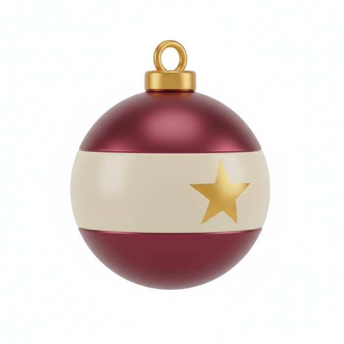
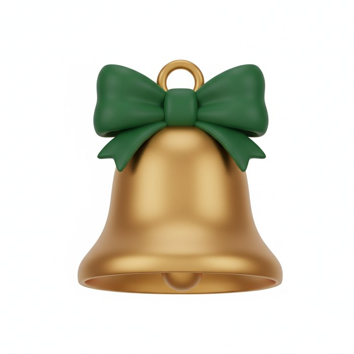

눈사람 · 놀람과 후속 움직임
웹 구현 요청 · 원문 발췌
클릭하면 깜짝 놀라서 폴짝 뛰고 모자 머리 몸통이 분리되었다가 다시 착지하는 느낌으로 애니메이션 잡아줘.
눈사람 점프할때 눈가루 흩날리게 해줘
움츠림 → 점프 → 머리·모자 분리 → 순차 착지. 목도리의 잔흔들림과 이륙·착지 눈가루를 함께 구현했습니다.
INTERACTIVE CHRISTMAS COLLECTION
반짝이는 장식 하나, 살포시 내리는 눈.
손끝으로 나만의 스노우볼을 꾸며보세요.
눈사람과 빨간 우체통, 아홉 개의 선물이 함께하는 작은 겨울이에요.
이 겨울은 3D 파일로 내려받아 계속 이어서 만들 수 있어요.
FROM VARCO TO A LITTLE WINTER
VARCO에서 만든 이미지와 3D 모델,
코드로 완성한 소품과 움직임을 함께 살펴보세요.
프롬프트 기록 안내 트리 수정은 저장된 화면의 원문 발췌입니다. 다른 이미지의 영문 프롬프트는 당시 입력 로그가 없어 제작 의도와 결과를 바탕으로 재구성했으며, 실제 입력 원문과 구분해 표시했습니다.

초록 잎과 금빛 별의 실루엣을 정한 생성 이미지예요.
EN PROMPT 제작 의도 기반 재구성 · 입력 원문 아님
A large, undecorated Christmas evergreen tree for a miniature snow globe. A broad, layered silhouette with full green foliage, a short visible trunk, and one rounded golden star on top. Leave plenty of room to add hanging ornaments later. Cute stylized toy-like proportions, softly rounded forms, clean materials, full object centered on a plain white background. No baubles, ribbons, presents, text, or extra objects.당시 입력한 영문 로그는 미확보 상태입니다. 대화의 제작 방향과 결과 이미지를 바탕으로 재구성한 문구입니다.
장식을 직접 달 수 있도록 큰 트리와 비어 있는 표면을 먼저 확보했습니다. 3D 변환 뒤 생긴 잎 사이의 빈틈은 다음 단계에서 수정했습니다.

빈틈이 많던 잎을 겹치는 단 형태로 수정하고, 메시와 텍스처를 웹용으로 가볍게 다듬었어요. 위 이미지는 저장해둔 실제 VARCO 작업 화면이에요.
VARCO 원본 작업 열기 ↗EN PROMPT 실제 입력 원문 · 발췌
Replace the entire perforated foliage with FIVE solid, plump, overlapping evergreen tiers.저장된 VARCO 편집기 스크린샷에서 판독한 첫 문장입니다. 입력 전체를 복원한 것은 아닙니다.
구멍이 많은 잎 구조를 닫힌 다섯 단의 덩어리로 바꾸고, 웹에서 사용할 수 있도록 메시와 텍스처를 최적화했습니다.
아래는 VARCO 2D 생성 이미지예요. 씬 속 방울·종·선물의 3D 형상과 재질은 코드로 다시 만들었어요.

색 조합과 별 장식을 참고했어요.
EN PROMPT 제작 의도 기반 재구성 · 입력 원문 아님
One cute Christmas bauble with a glossy burgundy-red spherical body, a wide ivory band around the middle, and one simple raised gold star on the front. Add a small gold cap and hanging loop at the very top. Clean, rounded toy-like forms, a polished 3D-style product illustration, full object centered on a plain white background. No tree, string, text, or extra objects.당시 입력한 영문 로그는 미확보 상태입니다. 대화의 제작 방향과 결과 이미지를 바탕으로 재구성한 문구입니다.
큰 색 띠와 별로 실루엣을 단순하게 만들었습니다. 웹에서는 꼭대기 고리를 회전축으로 잡아 매달린 방울처럼 흔들리게 했습니다.

금빛 종과 초록 리본을 재구성했어요.
EN PROMPT 제작 의도 기반 재구성 · 입력 원문 아님
One small golden Christmas bell with a simple dark-green ribbon bow and a gold hanging loop at the top. A rounded flared bell body, a visible clapper, soft metallic reflections, and clean toy-like proportions. A polished 3D-style product illustration, isolated and fully visible on a plain white background. No tree, hands, text, or extra decorations.당시 입력한 영문 로그는 미확보 상태입니다. 대화의 제작 방향과 결과 이미지를 바탕으로 재구성한 문구입니다.
종·리본·고리로 특징을 좁혔습니다. 3D는 코드로 재구성하고, 방울과 같은 매달림 반응을 연결했습니다.
둥근 상자와 리본을 만들고 색을 변형했어요.
EN PROMPT 제작 의도 기반 재구성 · 입력 원문 아님
One cute burgundy-red gift box with softly rounded corners, a slightly wider fitted lid, and a wide ivory ribbon crossing over the box. A soft ivory bow with two full loops on top. Simple, readable forms and a polished 3D-style product illustration, centered on a plain white background. No text, patterns, characters, or extra objects.당시 입력한 영문 로그는 미확보 상태입니다. 대화의 제작 방향과 결과 이미지를 바탕으로 재구성한 문구입니다.
열기 인터랙션을 위해 3D 상자는 몸통·뚜껑·리본으로 나눴습니다. 리본 고리를 세우고, 컨페티와 자동 닫힘을 추가했습니다.
눈사람·우체통·리본 띠·유리 돔·눈·배경은 코드로 제작했어요. 클릭 반응과 애니메이션도 웹에서 구현했어요.

부드러운 얼굴과 짧은 단발, 산타 의상으로 다듬은 캐릭터예요. 팔을 약 45도 내린 이 버전을 2D 디자인으로 남겼어요.
3D 변환과 포즈 실험을 거쳤으며, 현재 스노우돔에는 배치하지 않았어요.
3D 생성 실험 화면 보기 ↗EN PROMPT 제작 의도 기반 재구성 · 입력 원문 아님
A cute chibi Christmas angel girl, approximately three heads tall, with a softly tapered face, a short brown bob, gently lowered eyes, delicate upper eyelashes, and faint eyebrows. No visible nose or mouth. A simple burgundy Santa dress with white fur trim, a dark-green chest bow, small white angel wings, a reindeer-antler headband, and short red boots. Front-facing full-body A-pose, arms lowered about 45 degrees from horizontal. Clean 3D-style illustration on a plain white background; no wand, jewelry, or elaborate patterns.당시 입력한 영문 로그는 미확보 상태입니다. 대화의 제작 방향과 결과 이미지를 바탕으로 재구성한 문구입니다.
얼굴 폭·눈 위치·속눈썹·눈썹 농도를 반복 조정하고, 의상 장식을 단순화했습니다. 선택한 2D 디자인은 남기고 3D 포즈 실험은 현재 씬에서 제외했습니다.
DIRECTION → INTERACTION
아래 문구는 웹 제작 대화에서 확인한 실제 요청의 발췌입니다.
웹 구현 요청 · 원문 발췌
클릭하면 깜짝 놀라서 폴짝 뛰고 모자 머리 몸통이 분리되었다가 다시 착지하는 느낌으로 애니메이션 잡아줘.
눈사람 점프할때 눈가루 흩날리게 해줘
움츠림 → 점프 → 머리·모자 분리 → 순차 착지. 목도리의 잔흔들림과 이륙·착지 눈가루를 함께 구현했습니다.
웹 구현 요청 · 원문 발췌
선물들 누르면 뚜껑 열리면서 컨페티 터지게 해줘
그리고 뚜껑 다시 닫히게 해줘
선물별 독립 반응으로 뚜껑과 리본이 들리고 컨페티가 터집니다. 약 2.7초 뒤 닫히며, 작동 중 재클릭으로 동작이 끊기지 않도록 했습니다.
웹 구현 요청 · 원문 발췌
우체통도 클릭할때 약간 스쿼시 스트레치 넣어줘
밑동을 고정한 채 눌림·늘어남·복원을 연결했습니다. 문이 열리고 편지가 올라온 뒤, 메시지를 작성해 카드 이미지로 저장할 수 있습니다.